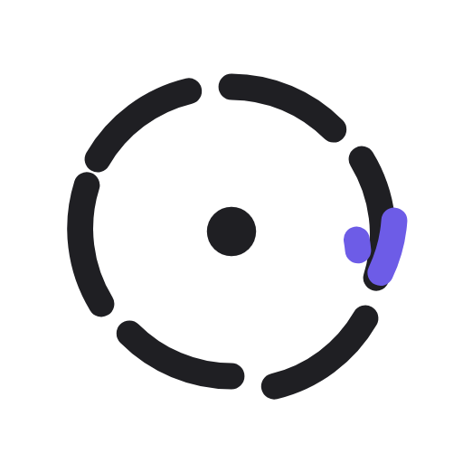
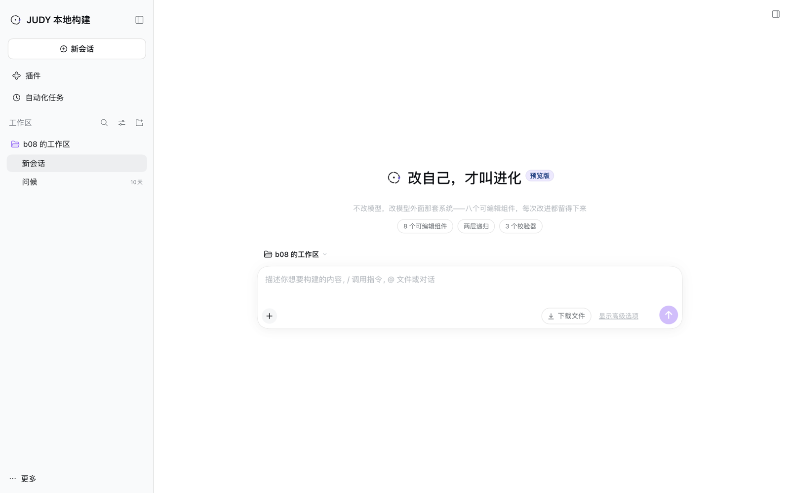
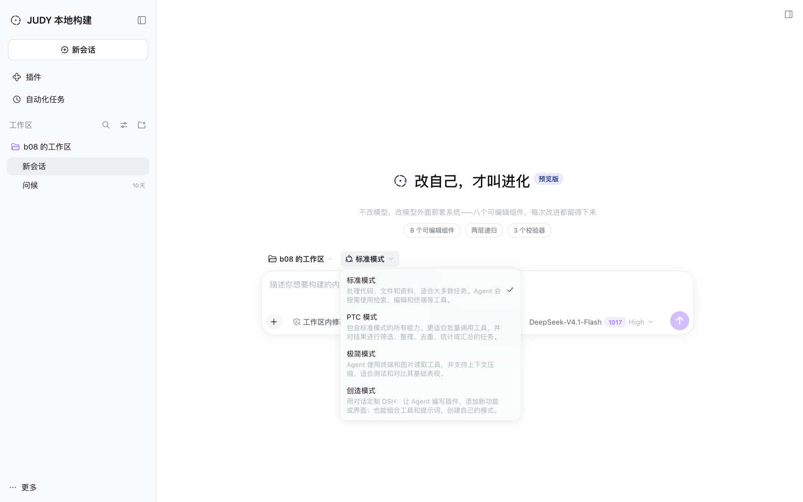
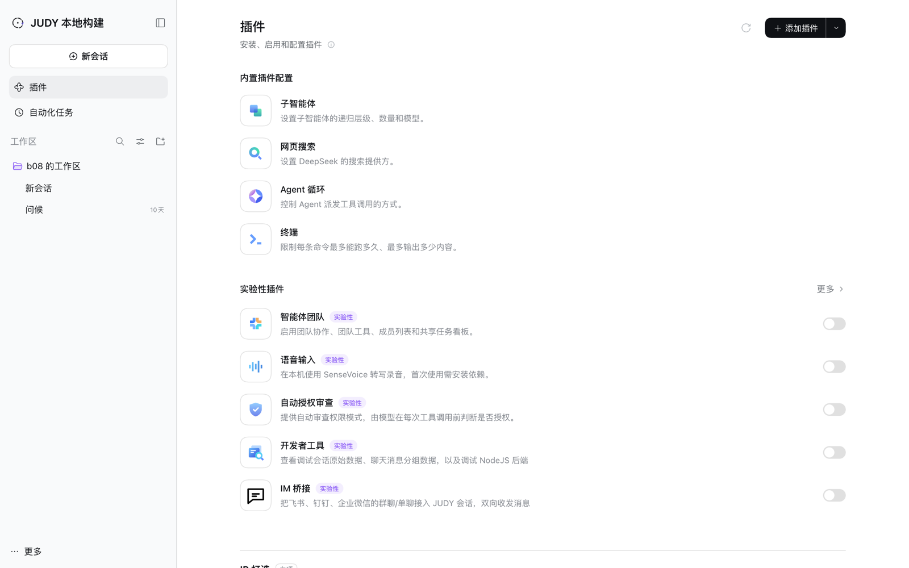

任务层 × 跨任务层：两层递归
每个任务先提案、再用真实执行对比、最后合成一份；被采纳的改法连同完整组件树写进同域经验库。 下一个任务先读经验，不必从零开始。

JUDY私有化 · 一客一实例 · 交付物带证据链
每个客户一台独立实例，每个交付物都能回溯到具体的人和具体的时间。
工具、提示词、身份、界面——都由你定义，版本与操作全部留痕。
HARNESS, NOT PROMPTS
模型权重不动，被优化的对象是模型外面那套系统：系统提示、护栏、记忆、工具指引、技能、子代理、脚本、插件。 这八个组件才是大多数 agent 失败的真正原因——而我们把它当成可被反复改写的对象。
每个任务先提案、再用真实执行对比、最后合成一份；被采纳的改法连同完整组件树写进同域经验库。 下一个任务先读经验，不必从零开始。
INV 只改“换个专业照样成立”的部分（流程、脚本、兜底），DOM 只改“这行人才知道”的口径与坑。 分开提案再合成——这是消融里贡献最大的一项。
靠同一任务的多次执行对比：分叉（同一步做了不同选择）、重复失败（每次都在同一处错）、未发生的风险。 选择器挑交付物，评分结果永不回流给改进者。
经验库存的是可执行的整棵树，配一份四字段说明：cue（什么时候翻这条）、lesson（该怎么做）、 evidence（哪次执行证明了它）、confidence（能不能推翻）。
技能没在常驻文本里被点名、脚本编译不过、常驻提示超预算——这三类错误在多数框架里不报错， 只是悄悄不生效。我们把它们拦在写入之前。
论文数字来自公开表格，我们只做算术复算；我们自己的效果以小规模 k=1 验证为准， 未验证的项不会写进对客材料。
看看我们怎么做的 ↗数字出自 Google Research《Recursive Agent Harnessing for an Open World》(arXiv:2610.14224) 的公开表格（WorkBuddy 均分，k=5 组件消融与 k=1 主表），我们仅做算术复算。
会话、预设模式、插件市场与专项能力——都在浏览器里完成。下面三张是 abc.judy.run 上的真实中文界面。

截图待补充：请按 Cmd+Shift+4 截取会话界面后保存为 assets/gui-chat.png

截图待补充：请截取新建会话的预设选择界面后保存为 assets/gui-presets.png

截图待补充：请截取插件/组合配置界面后保存为 assets/gui-compose.png
每个能力都是组合里的一行插件：工具、服务、界面、预设。增删能力，就是增删一行组合。
为不同角色创建独立 Agent：各自的工具集、提示词与身份。新建会话，即选即用。
Agent 可以检查运行时、实验插件，甚至为你创作全新的 Agent 预设——让 Agent 创造 Agent。
品牌名、主题色、Logo、界面元素，从内到外都能换成你自己的，做出独一无二的版本。
并行委托、多阶段编排，复杂任务拆给多个 Agent 协作完成，各司其职。
会话、设置与数据都存于本机，隐私可控、离线可用，你的智能体只属于你。
9 个行业 Agent 预设包，覆盖运维、客服、数据分析、教学、审查、IM 接入与 IP 打造；每个包自带 persona、技能与示例产物。
系统与代码维护
提取 PDF 文本内容
反欺诈与合规风控
工单处理与客户沟通
数据清洗与报告
讲解、出题与讲评
正确性/安全/性能审查
企业微信/钉钉消息推送
定位、选题到 30 秒口播
预设包在仓库 presets/industry/ 下，含 preset.yml、技能与说明；安装脚本为 bash presets/install.sh。
用 Docker 一键部署，或从源码运行：
# 方式一：Docker 一键部署（推荐，支持本地/国产模型）
docker compose -f deploy/docker-compose.yml up -d --build
# 方式二：从源码运行
git clone https://github.com/robin202208/JUDY-harness.git
cd JUDY-harness
pnpm install && pnpm run build && pnpm dsh web
# http://127.0.0.1:3080Docker 方式需要 Docker；源码方式需要 Node.js ≥ 22.19 与 pnpm。运行后即可在界面中选择或创建你的专属 Agent 预设。
JUDY 基于 MIT 许可开源，是 DeepSeek Harness（MIT）的二次开发分支。你可以自由修改、定制并部署自己的版本。
基于 DeepSeek Harness（MIT 协议）二次开发 · 保持开源，持续创新